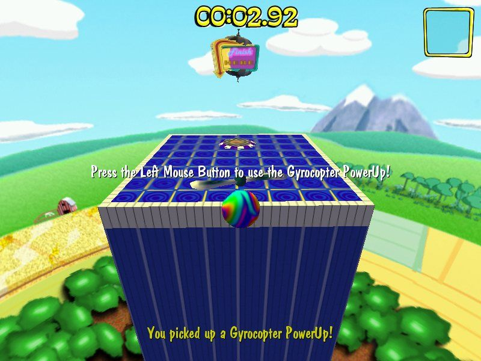

He's on the scene (he's a funky duck)
Are you ready to have fun? That’s the question Vulfpeck asks you on “Welcome to Vulf Records.” The piano and bass gladly welcome you in, like a colorful mat on your doorstep. It’s a total show, our hosts pulling back the chairs and kicking up our feet for us. Thrill of the Arts feels like being warmly welcomed into a house full of busy music. Notes clean, melodies cook, harmonies chatter in the living room. The instruments almost feel like an afterthought to the natural way the music infuses itself with the calm and lax emotion that dominates the album.
“Back Pocket” is like a gentle nudge while watching the football game you came over for in the first place. It’s a sunny afternoon, maybe 3 o’clock, and shoulders sway to the beat with ease. “Funky Duck” is an appreciation for the admittedly tacky Ikea furniture, and “Christmas in LA” is that track, the one that just happens to play as soon as you stand up to grab a bag of chips. Perfect dancing time.
“Rango II” is heavily underrated. It sounds like McCartney singing “I love you” on “Silly Love Songs.” It sounds like a Rolling Stones riff, a soulful organ song, a saloon shanty. It weaponizes personality, shifting like crazy before that great little “Yes!,” the only voice on the song. The changes in tone are chaotic and yet still maintain Vulfpeck’s signature energetic calm.
Easy soul singing and listening dominates the album. The crack of the bat and background vocals on “Game Winner” add raw power to Charles Jones’ vocals. Antwaun Stanley, that delightfully frequent Vulfpeck addition, kills it on “Funky Duck.”
Then you have “Walkies,” which just makes me want to play MarbleBlast Gold.
Wait, you haven’t played MarbleBlast Gold?
Shit.
An Aside about MarbleBlast Gold
Sorry, this is super important.
MarbleBlast Gold was once one of the greatest games of all time. Lots of people complain about easy mode being too easy, or hard mode being impossible. Whatever. The best games, as we all know, have a single difficulty. MarbleBlast Gold achieves the fabled single difficulty while still maintaining the most enjoyability by allowing for time trial modes and letting players work their way up through harder and harder levels.
The game teaches you how to enjoy it. It has this fun, bubbly soundtrack — honestly, it really does sound like “Walkies.” It has this bright and bouncy world filled with whimsical tools and traps, like the Gyrocopter, a delightful piece of machinery that baffled me to no end as a child.
And I still haven’t beaten all of it! I’m sure I could, but I just play it for a few sessions before deleting it at this point. Maybe one day I’ll finally beat it.
Okay, anyway, back to Vulfpeck.
Really, I think the magic and whimsy that takes over when I play MarbleBlast Gold is the same as when I listen to Thrill of the Arts. The people making this are just having such a good time making this. I remember the first Vulfpeck concert I went to. I went with my friend Alex to the Greek in Berkeley. They put on a killer set and they were undeniably having a blast. Still one of the best concerts I’ve ever been to.

Oh, the review. Jeez, I’m really getting sidetracked here. Hmm. What else to say? Oh, man, the lack of vocals on “Conscious Club (Instrumental)” is way better than the vocals on the non-instrumental version. Vulfpeck succeeds the most when they just let the music be the real deal. They just as easily could have recorded boring ass vocals over all of these songs. But the ones with vocals on them have them for a purpose, and it doesn’t have to be lyrical delivery! In fact, the voice is truly a part of the music in a way that lacks in a lot of other albums like this.
I do think it ends kind of flatly. “Smile Meditation” and “Guided Smile Meditation” are much more chill than anything else on the album. I imagine Vulfpeck figured this would be the point at which people talk to one another at the imaginary house party they’re throwing. Some people are listening to the music, some are watching the game, and some are clustered around the family desktop playing MarbleBlast Gold.